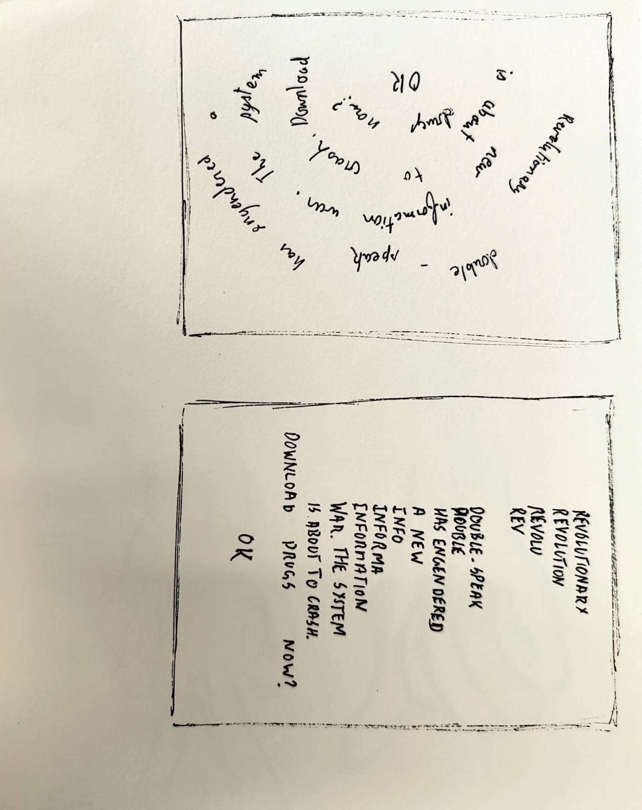
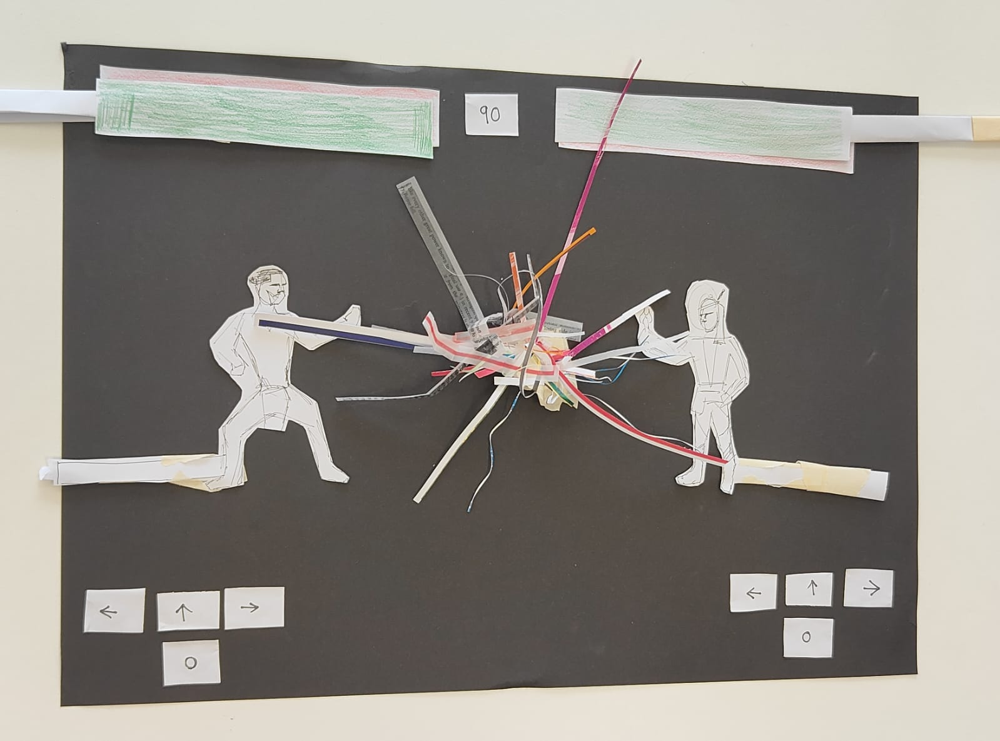
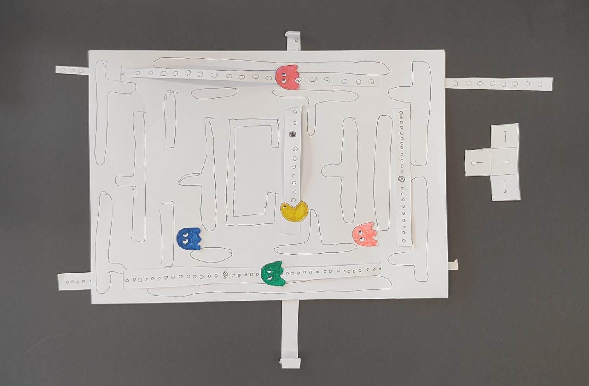
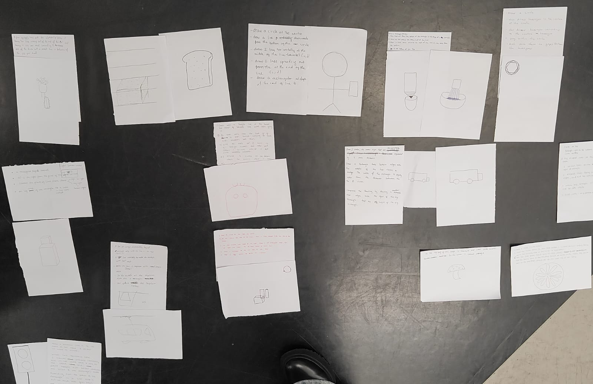
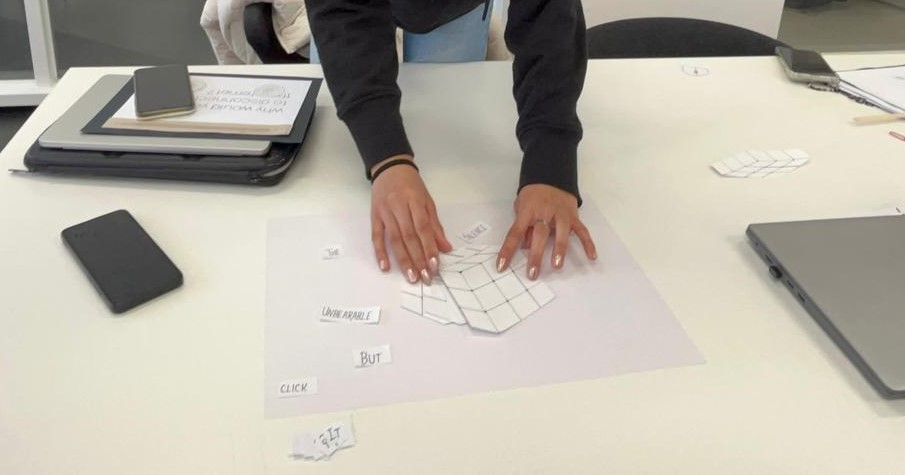
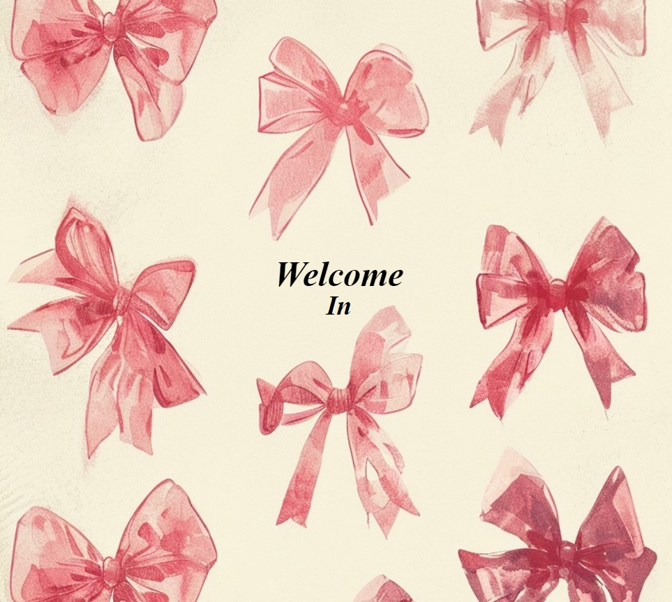
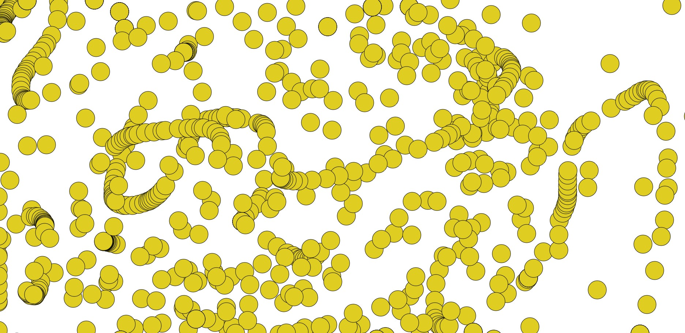
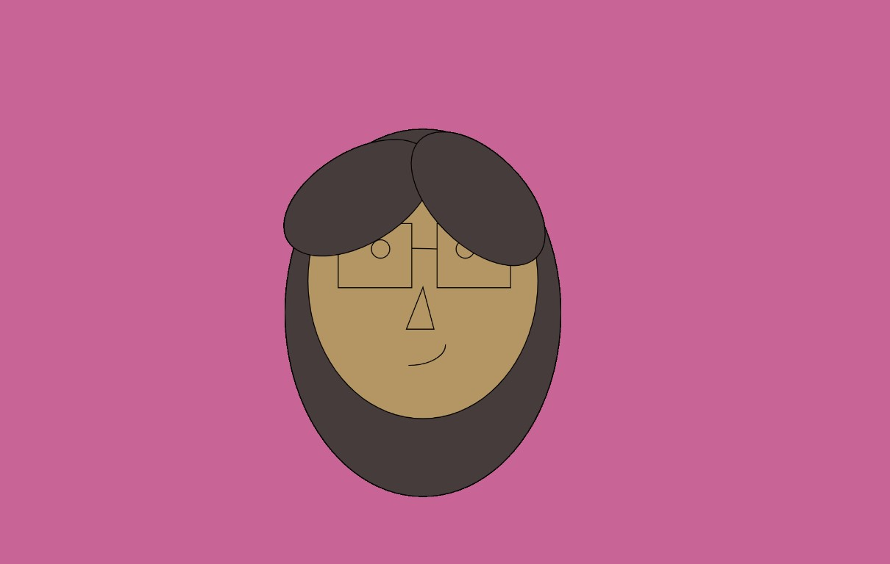
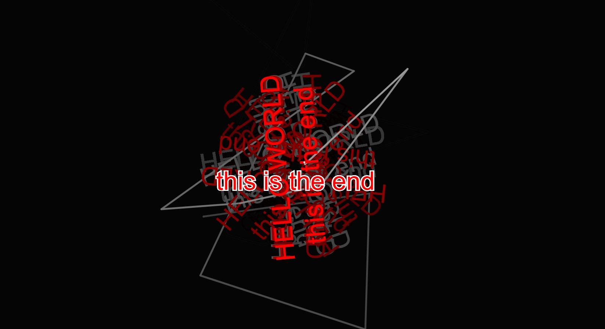

It was one of the initial activities in our tutorials, helping us quickly and effectively express ideas. We had one minute per idea to sketch out multiple designs, allowing us to explore and identify the ones we liked most. This helped me explore various thought processes in a short amount of time.
This method was used twice first for the major project and then later on for the SKO. I used this technique personally as well as it was an effective method to drain out the initial ideas before reaching to a final outcome.

Game Play
This activity showed us how a paper prototype should work. We chose an existing game and made a working prototype in about 15 to 20 minutes. We explored how each group showcased their work in creative ways, as there were no such restrictions for the activity.


Instructions and sketch
This activity allowed us to see how a computer would react to our direct commands. We created a simple sketch and wrote down instructions for replicating it. We then gave these instructions to a classmate, who attempted to recreate the initial sketch based solely on the written directions.

Paper prototype
Presenting our prototypes to the class allowed us to observe how people interacted with our designs. This provided insights into possible improvements and ways to make our design more communicative. Before starting with the code for our major project, we got a fair idea of how our users would react to the webpage.

Assignment
Paper Prototype
Throughout this semester, we had three assignments, including this final one. The first assignment was to create a paper prototype of our major project concepts. This was a relatively light assignment, as it coincided with our learnings in coding. Through this exercise, we focused on developing a rough, tangible representation of our ideas, allowing us to present and discuss them with professors and classmates before diving into the actual code. This approach helped us visually brainstorm, encouraging a smooth flow of ideas and refining our thought processes before committing to a final idea.
Major Porject
In Assignment 2, we took our paper prototypes and brought them to life through code. This task lets us push the boundaries of traditional design, visualizing our concepts interactively and exploring new personal interests in coding. It challenged us to think beyond the basics, asking us to consider what elements could enhance a simple website, making it more dynamic and engaging for the user. This gradual progression helped bridge foundational design skills with new interactive experiences. This project taught me a lot through code and enhanced my understanding of ser experiences as well, as we saw how our classmates integrated with our projects in real-time.
Case Studies
Andreion de Castro
He is one of the graphic designers I was inspired by while doing my major project. He is a freelancer who specialises in motion, type, identity, and creative coding. He has worked for clients including O2, Prada Beauty, The Verge, Grammys, Workplace, Discover.
He has experience working with different studios, such as Public Library, VCCP London, Bielke&Yang, and Tomorrow Bureau, in a range of fields, including commercial, digital, and technology.
His style really resonated with me; it struck a balance between simplicity and impact that I found both inspiring and memorable. The minimalistic approach made each element feel purposeful yet still conveyed a strong, effective message.
Anita Dongre's journey inspired me, even though she is in the fashion industry, she has a great mix of traditional and western culture in her works that I find very amusing.
She has successfully built a brand that represents the best of Indian craftsmanship while championing sustainability and women's empowerment. Through her innovative designs and ethical practices. Her work goes beyond creating beautiful garments; it encompasses making a meaningful social impact and preserving the rich cultural heritage of India. Anita Dongre's legacy is one of artistry, responsibility, and empowerment, making her a true icon in the world of fashion.
The studio, Codewords: Creative Coding and Typography, explored code and type across various forms, going far beyond my initial expectations. I had assumed we’d focus on website building and possibly app development, but this course offered much more. Each interactive class included multiple examples, case studies, and activities that tested our understanding of design elements, refining my design process and boosting my time management skills.
We immersed ourselves in user interactions with websites and learned how subjective user interpretations can be. In one exercise, we each selected our favorite webpage from a set, revealing the wide variety of individual design preferences in just one classroom. Morning classes centered around researching and understanding different designers and using activities to illustrate how our code would function. Afternoon sessions were focused on coding, primarily in Processing(P5.js) and Visual Studio Code, where we explored diverse techniques like adding sound, interactivity, and animations to simple texts, which kept each class engaging and unique.
This studio taught me something new each week, pushing me to broaden my coding knowledge. I discovered WEBGL while working on my major project, as I wanted my final webpage to feature three-dimensional elements to enhance the visual aspect. These assignments allowed me to dive into my interests while giving me the creative freedom to communicate whatever I wanted to convey to users. This flexibility enabled me to express my ideas more properly and tailor my work to reflect my own vision.
Through these assignments, I gained valuable techniques and fresh approaches to presenting my designs, which I’ll continue to incorporate into my practice. Integrating code into my work has expanded my ability to create interactive, engaging designs. This will further help me with web designing and enable me to produce more responsive layouts. The experience of progressing from initial research to outcomes taught me the full design process, while the feedback at each stage kept me focused and efficient, allowing me to reach each milestone on time. Overall, this experience has improved my design approach, strengthened my skill set, and expanded my understanding of coding and design.
Code
Crazy 8 - HTML
In week one we learned the basics of code on visual code. We were asked to choose a specific phrase and try to recreate the Crazy 8 that we had drawn in class.

Circles
In the following class, we began working with Processing to make our code more interactive. The first technique we learned involved creating a shape or object that followed the cursor, allowing the user to sketch freely on a black canvas by simply moving the cursor. This code tracked every movement, creating an experience where users could interact directly with the design, almost like drawing on a digital page.

Portrait
We were given the task of creating a portrait of ourselves through only shape, By coding the placements of the elements on a webpage we understood the parameters in a site. This gave us freedom to explore the shapes in 2d and show what we have understood this far in code.

Mouse functions
This website also tracked the movement of the cursor but made us understand transparency and on click and mouse press functions. This helped us later to make our web pages more responsive. We also learned how to move text around.

Sound
There was a code where we learned how to add sound to a page and adjust the volume through the movements of the user. The need for sound in a web page was introduced. It made the page more engaging.
Wiggling letters
A way to show movement in the letters by themselves, so that there is constant movement on the webpage.